Best Student Paper — IEEE FLTA 2025
01
Federated Learning — my core expertise
I build machine learning that goes to the data instead of pooling it. My method Feature Election lets independent sites agree on the most informative features of high-dimensional, non-IID data without sharing a single row.
It won Best Student Paper at IEEE FLTA 2025, passed the NVIDIA FLARE core team's code review, tests and CI and was merged upstream, launched the same day on Flower Hub, and I've presented it at NVIDIA FLARE Day 2026 and the Federate AI Summit in Boston.
NVIDIA FLARE
Flower
Federated feature selection
Federated HPO
Non-IID data
Cross-site analytics
PyTorch
Docker · Kubernetes · AWS
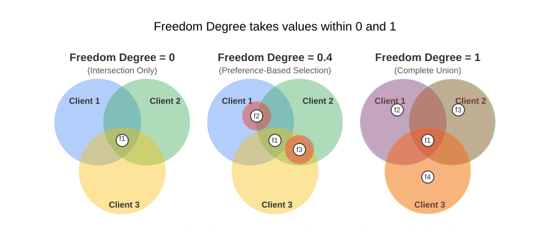
Research
FLASH: federated feature selection + hyperparameter optimisation. Best Student Paper, IEEE FLTA 2025. MEng thesis on feature selection in FL.
Open source
Feature Election merged into NVIDIA FLARE after core-team review; same-day launch on Flower Hub.
Talks
NVIDIA FLARE Day 2026, Federate AI Summit 2026 (Boston, talk + poster), Flower AI Summit 2026 (poster).
Hackathons
CMU × NVIDIA FL Hackathon: 3 team awards for a biobank-scale FLARE + AWS prototype. Cross-TRE federated analysis at the Nordic Biobank × NVIDIA hackathon.
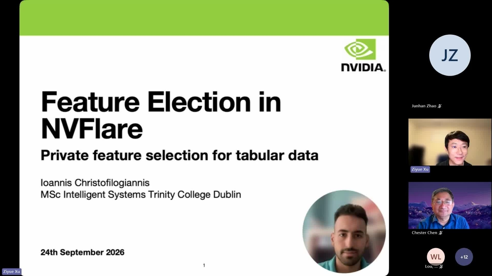
Watch the talk · NVIDIA FLARE Day 2026Feature Election, presented at
-
Sep 2025
IEEE FLTA 2025, Dubrovnik: paper talk, Best Student Paper · paper
-
2026
Flower AI Summit 2026: poster · Flower Hub app
-
Sep 2026
NVIDIA FLARE Day 2026: talk · video · FLARE example
-
Oct 2026
Federate AI Summit 2026, Boston: talk + poster · photos
02
Latest — Federate AI Summit, Boston
20 October 2026
Feature Election: private feature selection for tabular data
I gave a talk and presented a poster on Feature Election at the Federate AI Summit in Boston, showing how independent data holders can pick the features that matter without ever pooling their data, and how it now ships inside NVIDIA FLARE and Flower.
I also recorded an on-camera interview at the summit, and took the chance to visit MIT while in town.
The ideas behind the talk, on Towards Data Science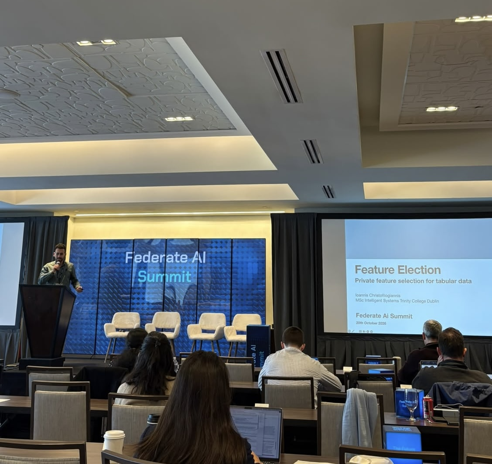
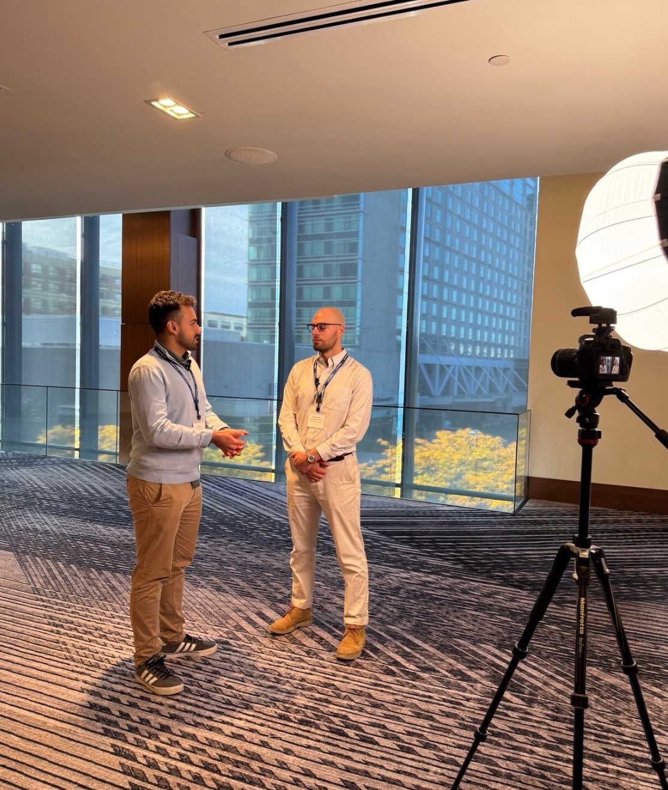
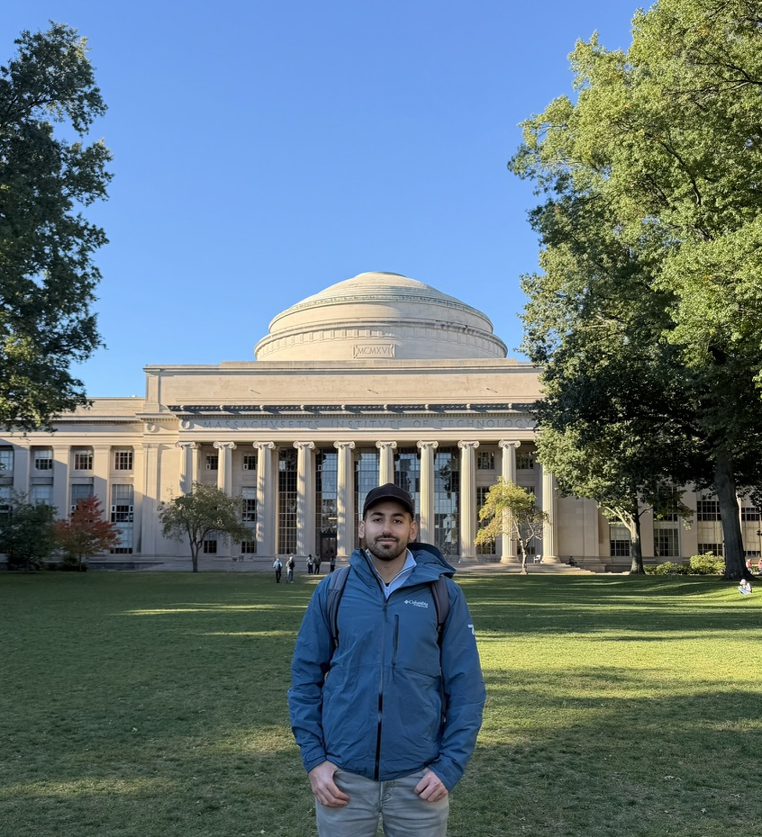
03
About
ML research engineer whose core expertise is federated learning. I've published first-author research in federated ML and computer vision, trained multi-agent RL policies for traffic control, and shipped LLM-powered apps. MSc Intelligent Systems (Distinction) at Trinity College Dublin and a 5-year MEng in Electrical & Computer Engineering.
Federated & distributed ML
NVIDIA FLARE
Flower
Feature selection
Training-subset selection
Non-IID benchmarking
Search, retrieval & RAG
BM25 + dense retrieval
Reciprocal Rank Fusion
Apache Lucene
trec_eval
Grounded answers w/ citations
🎓 TCD Information Retrieval · Distinction (94%)
Deep learning & RL
PyTorch
TensorFlow
scikit-learn
Hugging Face
MAPPO · IPPO
YOLO v8–v12 fine-tuning
CoreML · Metal
AI agents & LLM engineering
Claude Code (daily, plugins)
Anthropic API
OpenAI Agents SDK
Multi-agent pipelines (planner → builder)
Tool use
Prompt engineering
Human-in-the-loop reporting
Multi-model routing & fallback
Open models: Qwen
Local inference: llama.cpp · MLX
Building Trident, an open-source prompt → plan → build agent pipeline with editions for Claude Code, the OpenAI Agents SDK and local Qwen models.
Engineering
Python
Java
C/C++
Swift/Metal
SQL
FastAPI
Docker
Kubernetes
AWS
How I work
- I ship to production: Irish Tunes went from concept to a deployed web app; my first-ever NVIDIA FLARE contribution was merged upstream.
- I pick up slack: hired at HCMR for ML, I also built the data pipeline and annotation tool the scientists relied on.
- I measure before optimising: benchmark on real-world conditions, keep pipelines reproducible and documented.
- I learn new stacks fast: shipped a native Swift/Metal app from a Python/C++ background.
🇬🇷 Greek (native)
🇬🇧 English C1 · IELTS 8.0
🇫🇷 French A1
🇨🇳 Chinese HSK2
🇪🇺 EU citizen
04
Experience
MSc Dissertation Researcher · Trinity College Dublin
Dublin — Aug 2025 – Aug 2026 · Supervisor: Prof. Vinny Cahill- Multi-agent reinforcement learning (MAPPO, IPPO) in PyTorch for motorway traffic management — Distinction (76%)
- Showed that the representation given to the centralised critic decides whether it beats independent learners; a compact agent-specific input closed the gap. Paper in preparation
- Built sumoMacGUI, a native macOS SwiftUI/Metal front-end for SUMO simulations
ML & Computer Vision Researcher · Hellenic Centre for Marine Research
Remote — Dec 2024 – Jul 2025 · Cure4Aqua (EU-funded)- Curated large stereo image datasets (sanitisation, validation, augmentation) and selected the most valuable training subsets
- Benchmarked YOLO v8–v12 under real conditions — YOLOv12s reached mAP 0.81 / 0.91
- First-author paper in Aquacultural Engineering
- Built the data pipeline and the AI-assisted annotation tool the marine biologists relied on
AI Researcher, MEng Thesis · Technical University of Crete
Chania — Sep 2024 – May 2025 · Supervisor: Prof. Sotiris Ioannidis- Designed FLASH / Feature Election — finding the most informative features across independent sites without pooling data
- Led to the Best Student Paper at IEEE FLTA 2025 and the upstream NVIDIA FLARE integration
Software Engineer (part-time) · Aquark
Oct 2023 – Present- Building Trident, an open-source planner/executor agent pipeline across Claude Code, the OpenAI Agents SDK and a local Qwen model
- Software and websites for the company
Computer Vision Research Intern · Heriot-Watt University, BCML Lab
Edinburgh — Jul – Aug 2023 (lab website)- Anomaly detection for fish-gill histopathology in a joint academic–industry team with biotech company EpitogenX
- Automated QuPath workflows in Groovy
Software Developer · TUCer Autonomous Racing Team
Chania — Jan – Jul 2023 (team website)- Autonomous driving algorithms with ROS and Python; Arduino sensor integration
- Competed in Shell Eco-marathon 2023, Nogaro, France
05
Publications & Talks
Journal · First author
Automatic Detection of Fin, Operculum & Skin Deformities in Mediterranean Fish
MSc Dissertation · Distinction
Multi-agent Reinforcement Learning for Travel Time Reliability
Read the abstract
Between its ramps, a motorway has no signals, meters, or signs: nothing for learning-based traffic control to actuate. Two decades of reinforcement learning for traffic have therefore lived in the infrastructure, while the road between the ramps stays uncontrolled. This dissertation moves the learning to the vehicles. It models road space as a conveyor of moving slot reservations and treats every vehicle as a recurrent learning agent choosing among five discrete slot manoeuvres: hold the current reservation, shift forward or backward, or change into a compatible slot in an adjacent lane. On top of a rule-based slot simulator and the SUMO microscopic traffic simulator, a complete multi-agent learning system is built: lifetime-scoped agent rows, compact local observations with optional task signals, an 18-term reward with hybrid per-agent credit assignment, and a three-layer safety envelope that makes collisions structurally impossible. Multi-Agent Proximal Policy Optimization (MAPPO) and Independent PPO (IPPO) are trained on a segment suite inspired by Dublin’s M50, spanning straight and curved corridors, passable hazards, lane drops and gains, on-ramp merges, and exit diverges, each evaluated against matched do-nothing and random-valid baselines.
Learning pays exactly where coordination is genuinely needed. On free-flowing roads the slot layer alone sustains throughput, and training adds discipline: vehicles stay within one slot of their assignment 96% of the time, using a quarter of the maneuvers of a random policy, and the behavior transfers zero-shot to an unseen curved corridor. Where scenarios demand more, trained vehicles take their assigned exit 88% of the time against an 18% baseline. In the on-ramp scenario they finish merges in their assigned mainline lane 72% against 42% while cutting the merge queue by up to 90%. They also clear a lane drop into the surviving lane 88% against 65% with a travel-time tail less than half as long. Every result, for every policy, at every demand level, is collision-free.
The most important finding is that IPPO consistently beat centralized MAPPO, which looks like evidence against centralized training with decentralized execution. Diagnosis traced the gap to the critic’s input: a 1289-value joint observation, two thirds padding, in which the vehicle being valued is marked by a single flipped bit. Replacing it with Minimal MAPPO, a 29-value agent-specific critic holding only the global traffic state and the focal vehicle’s own view, closes the gap on the merge, overtakes IPPO on the exit corridor. It also degrades most gracefully under demand far beyond training, with 26% less queueing than IPPO at the heaviest demand tested. Minimal MAPPO manages to match or beat IPPO on difficult scenarios because the critic can clearly see whose return it is predicting, due to the more targeted observation vector, while it is utilizing more observation features than IPPO. Finally, a native macOS alternative for SUMO GUI was built when the official interface failed on the test system. This work is a demonstration that, inside a safe environment, learning vehicle-level cooperation on a motorway is feasible.
Editor's Pick — Towards Data Science
Voting on Features: Federated Feature Selection Without Sharing Data
Towards Federated Learning Across Biobanks: Prototype Software from the 2026 CMU–NVIDIA Hackathon
Non-invasive Monitoring of Fish Morphometric Traits Using YOLO-based Computer Vision in Aquaculture
Feature Selection in the Federated Machine Learning Setting
Talks & posters
Talk + PosterOct 2026
Feature Election
Federate AI Summit 2026, Boston
Photos TalkSep 2026
Feature Election: Private Feature Selection for Tabular Data
NVIDIA FLARE Day 2026
Watch on NVIDIA On-Demand Poster2026
Feature Election in Flower
Flower AI Summit 2026
Flower Hub app Paper talkSep 2025
FLASH
IEEE FLTA 2025, Dubrovnik
Best Student Paper
Read the paper
06
Featured Projects
FLASH / Feature Election
A distributed algorithm that coordinates many independent data holders to find the most informative features without pooling their data, on heterogeneous (non-IID) data. Merged upstream into NVIDIA FLARE and launched on Flower Hub.
Give us a on GitHub Flower Hub NVIDIA FLARE exampleIrish Tunes
Irish Tunes AI Quest Top Award
Teaches Irish (Gaeilge) through traditional songs. Retrieval over a curated corpus with an Irish-specialist 24B LLM, behind an LLM serving layer with automatic model fallback. €1.6k prize + €32k in compute.
Try it live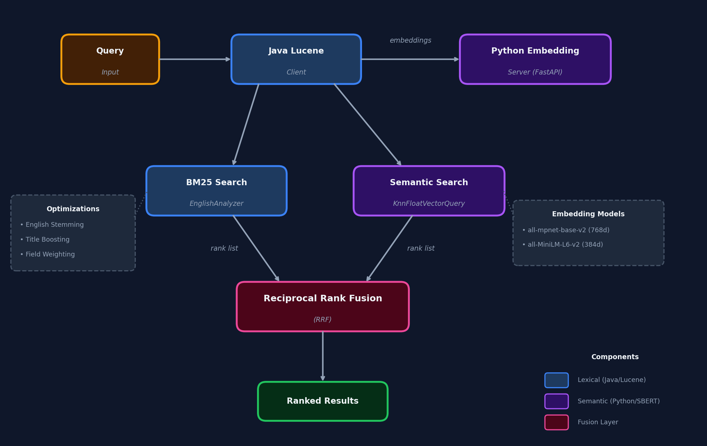
Hybrid Search Engine
BM25 lexical retrieval fused with SentenceTransformer dense retrieval via Reciprocal Rank Fusion — +27% MAP over BM25 on Cranfield (trec_eval), with parameter sweeps.
View on GitHubAgent Feed
Agent Feed
An AI-assisted RSS reader on a local, open LLM. Files articles into your topics by meaning, summarises and translates them, and answers questions with citations to its sources.
View on GitHubFedGen · Cross-TRE
Federated Biobank Analysis
Team FedGen: end-to-end FL prototype on NVIDIA FLARE + AWS for biobank-scale disease subtyping and genetic analysis (CMU × NVIDIA). Plus cross-TRE federated analytics that run where sensitive data lives (Nordic Biobank × NVIDIA).
Read the preprintPearArena
sumoMacGUI
GroundSense
GroundSense
Open-vocabulary 3D scene segmentation and querying for visually impaired users: an iPhone streams RGB + LiDAR depth to a YOLO-Seg and depth-fusion backend that answers by voice and warns of obstacles.
View on GitHub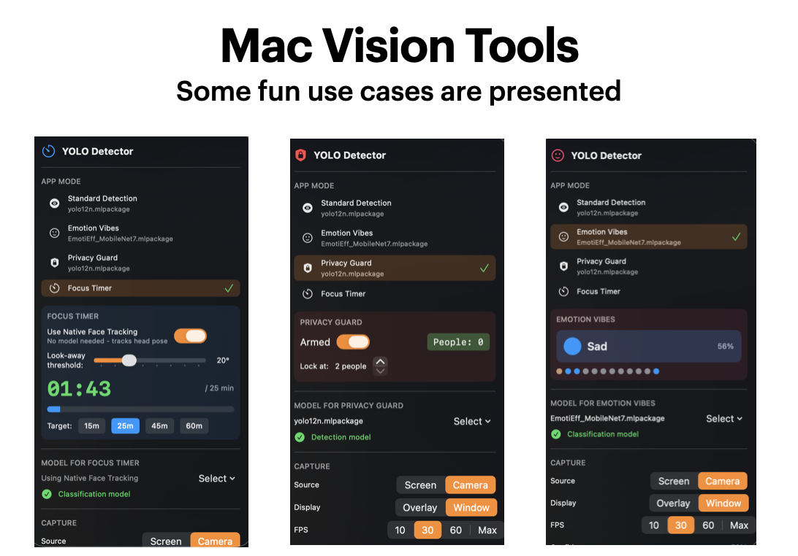
Mac Vision Tools
A macOS menu bar utility that runs on-device computer vision models in real time.
Website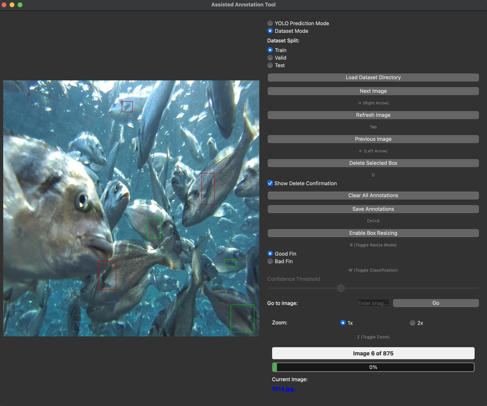
YOLO AI-Assisted Annotation Tool
AI-assisted annotation tool with YOLO model integration, built for classifying Mediterranean fish fin quality at HCMR and adaptable to any binary classification project.
Give us a on GitHub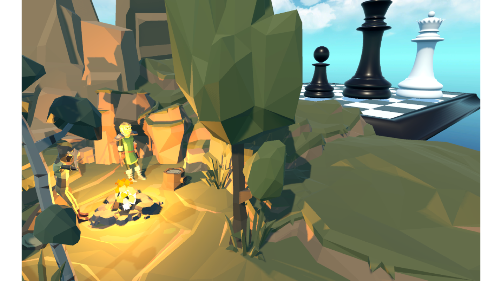
3D Puzzle-Adventure Game
Custom Unity game featuring original artwork and puzzle mechanics, with 3D graphics techniques and game physics.
View on GitHubMore projects
- The Negotiator — neural-network negotiation agent for multi-agent systems
- Map-Reduce on Kubernetes — Longhorn storage and real-time cluster monitoring
- Network Queueing Simulator — FCFS vs SITA for large-scale networks
07
Awards & Hackathons
Best Student Paper
IEEE FLTA 2025, Dubrovnik · Sep 2025
Best Documentation, Most Productive & Most Innovative Team
CMU × NVIDIA Federated Learning Hackathon · Jan 2026
Implementation Top Award
AI Quest for Ireland 2026 · Irish Tunes · €1.6k + €32k compute
HackUPC 2026
Universitat Politècnica de Catalunya, Barcelona · Apr 2026
TUC CTF 2023 Winner · EDGELESS Code Camp
Technical University of Crete
ICPC SEERC 2023 finalist
Advanced past the Greek qualifier (GRPC) to the regional
08
Education
Trinity College Dublin
MSc Computer Science — Intelligent Systems
- Dissertation: multi-agent RL for motorway traffic management — Distinction (76%)
- Information Retrieval — Distinction (94%)
- Coursework 90%+ incl. Reinforcement Learning, Multi-agent Systems
- Winning team at the CMU × NVIDIA Federated Learning Hackathon
Technical University of Crete
MEng Electrical & Computer Engineering (5-year integrated)
- Thesis: Feature Selection in the Federated Learning setting
- 10/10 in Distributed Systems, Computer Security, and Computer Organization (pipelined processor built from scratch in VHDL); 9/10 in Reinforcement Learning
Training
- FLTA Federated Learning Summer School 2025 — hands-on with Flower, Scaleout, NVIDIA FLARE and P2PFL
- PIERCE — The American College of Greece, High School 2016–2019 · Student Board member (3 years), maths competition distinctions
09
Life & Adventures
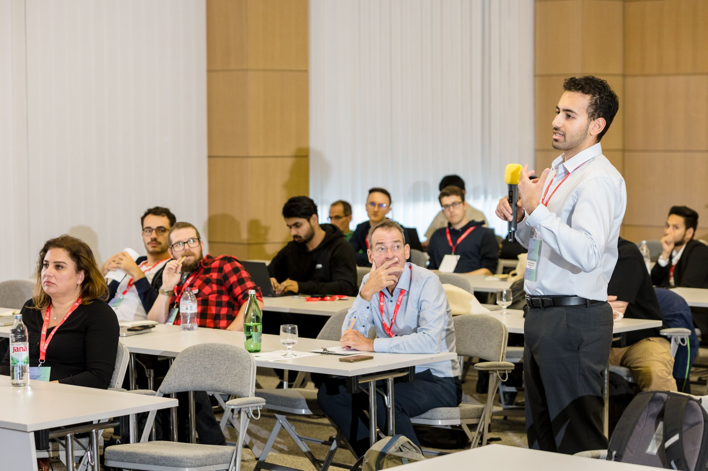
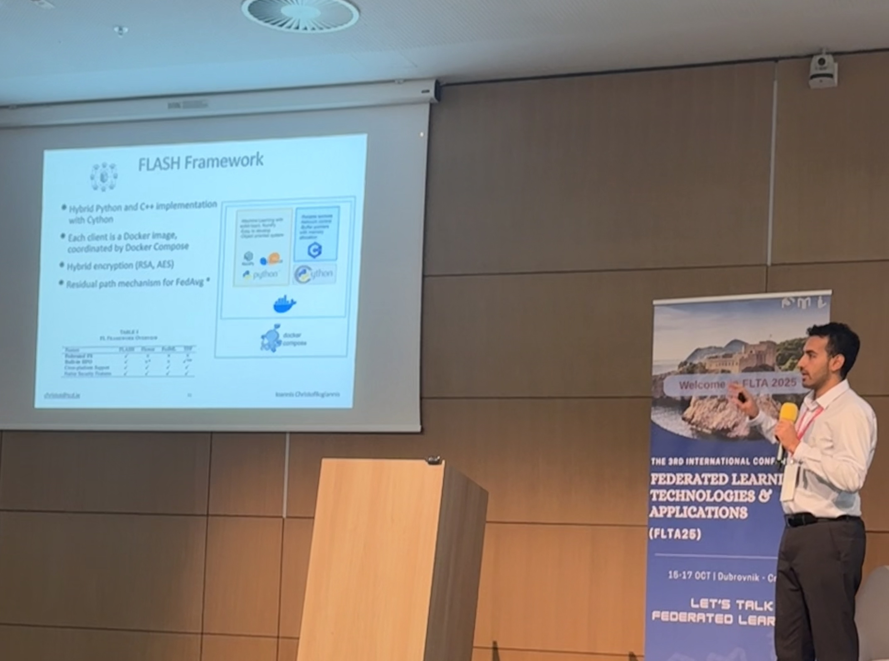

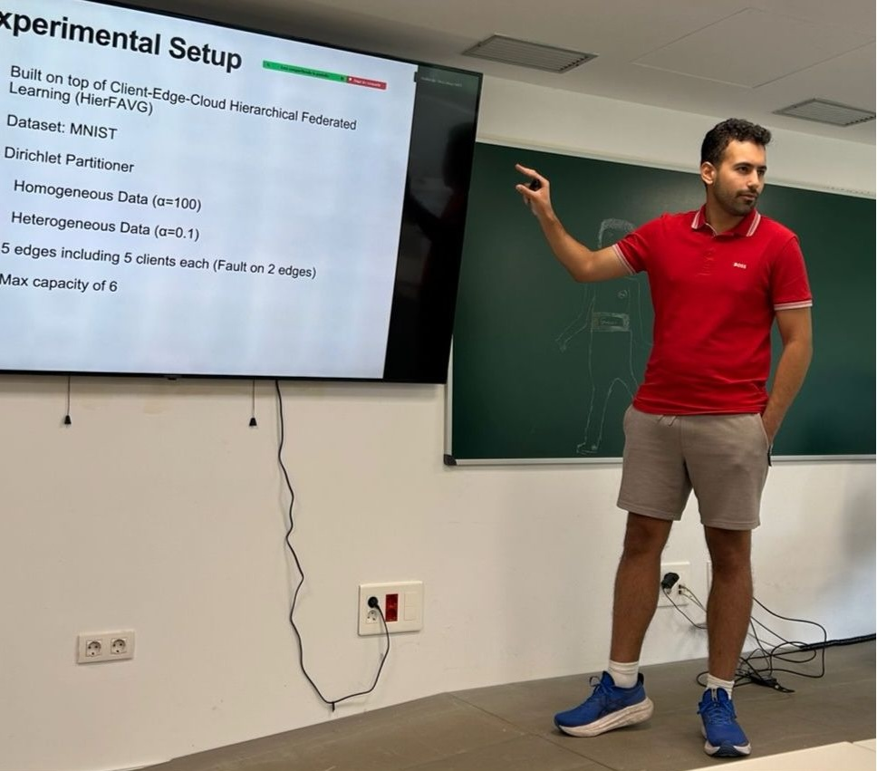
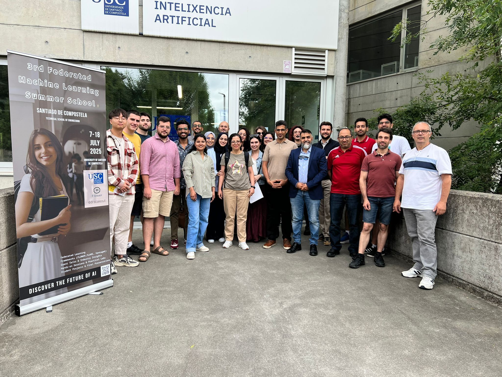
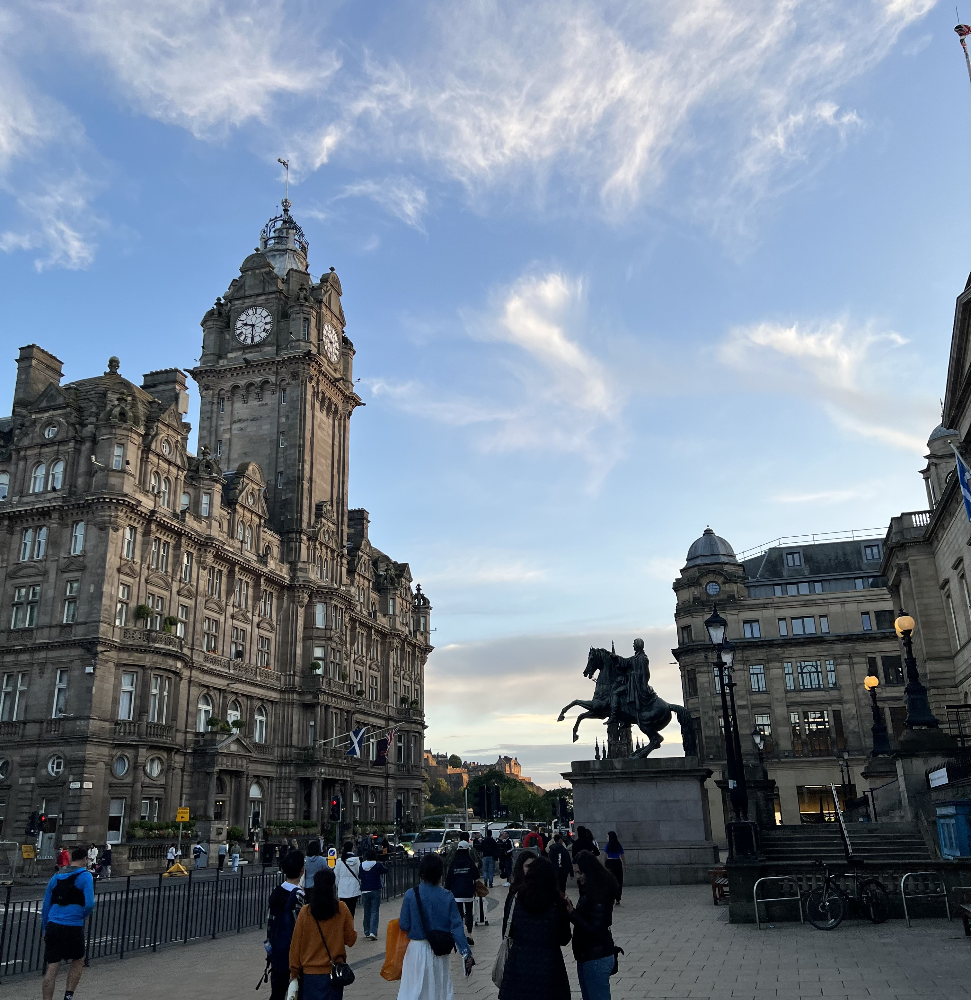
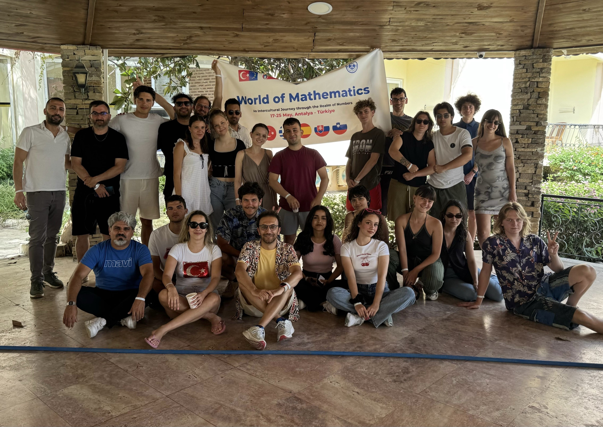
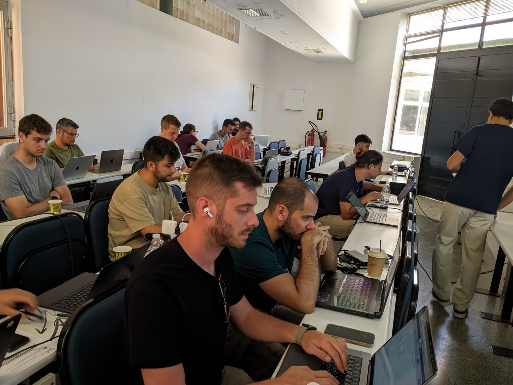
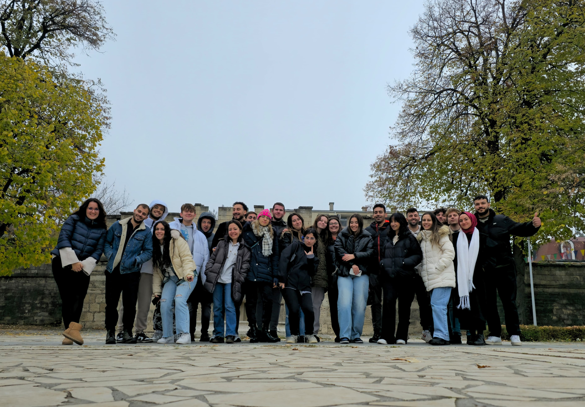

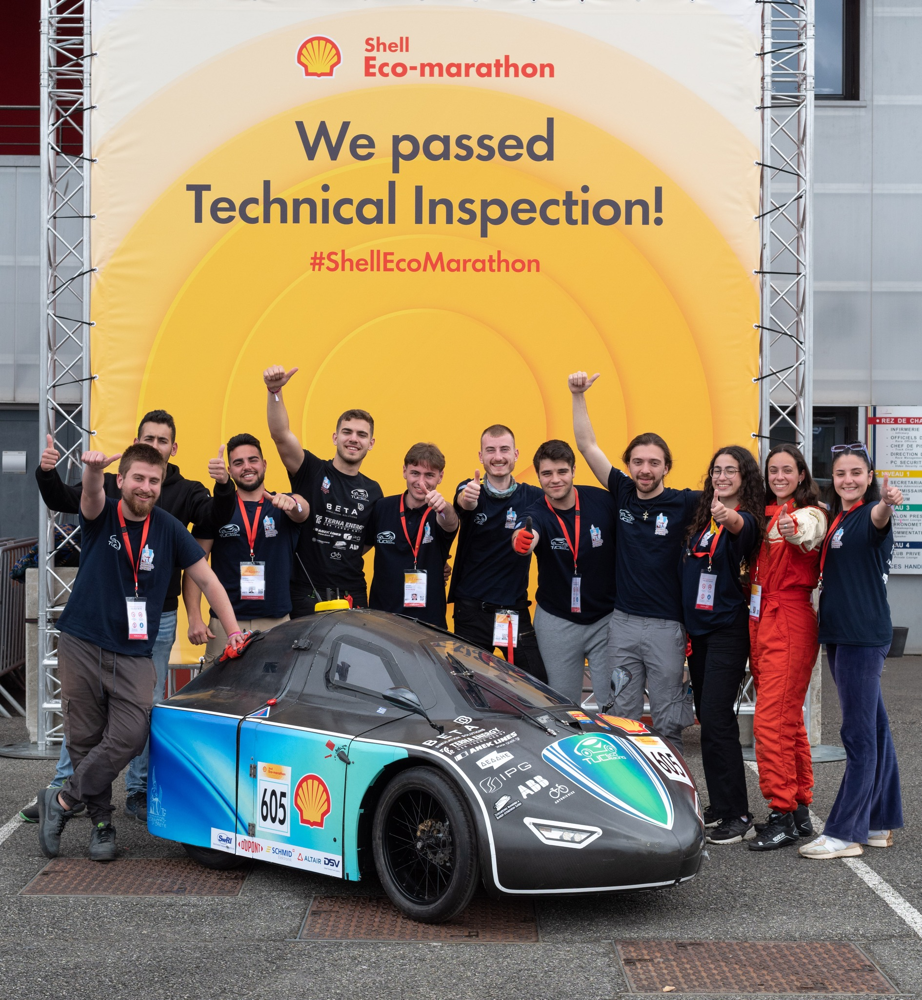